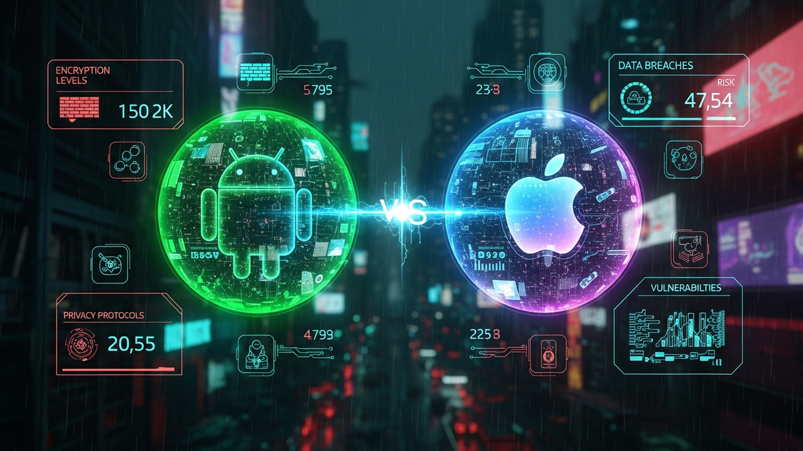

In the rapidly evolving landscape of mobile technology, the perennial debate over which operating system reigns supreme in terms of security continues to captivate users, enterprises, and cybersecurity experts alike. As we cast our gaze forward to 2026, the lines between Android and iOS, once starkly drawn, appear increasingly blurred by a relentless arms race in defensive capabilities. Both platforms have invested billions in hardening their respective ecosystems, driven by escalating cyber threats, ever-stricter regulatory demands, and the critical importance of user trust. This article delves deep into the projected security postures of Android and iOS in 2026, dissecting their architectural foundations, app ecosystems, update mechanisms, privacy controls, and future threat mitigation strategies to answer the pivotal question: Which operating system is actually safer?
The fundamental divergence in security between Android and iOS has historically stemmed from their core architectural philosophies. iOS, a proprietary, closed-source operating system, operates within Apple's tightly controlled "walled garden" approach. This vertical integration, where Apple designs and manufactures both hardware and software, provides an unparalleled level of control over the entire stack. By 2026, this advantage will have been further solidified through advancements in hardware-backed security. Apple's Secure Enclave, a dedicated coprocessor, will likely be even more sophisticated, handling cryptographic operations and biometric data with enhanced isolation and resistance to side-channel attacks. Secure Boot processes, ensuring only trusted code loads at startup, will incorporate more advanced attestation mechanisms, making it increasingly difficult for sophisticated rootkits or persistent malware to compromise the device at a low level. The strict app sandboxing model, isolating applications from critical system resources and each other, will be further refined, potentially leveraging hardware virtualization features to create even more robust compartmentalization. Apple's control extends to mandatory code signing and notarization for all applications, a process that ensures software integrity and lineage before it can run on an iOS device. This holistic control allows Apple to implement a unified security strategy, patching vulnerabilities across all supported devices simultaneously and enforcing consistent security policies across its entire ecosystem. The downside, often cited by critics, is the limited transparency and user freedom, though from a pure security standpoint, it creates a formidable barrier against many forms of attack.
Conversely, Android's open-source nature, built upon the Linux kernel, embodies a philosophy of flexibility and broad device compatibility. This openness, while fostering innovation and customization, has historically presented significant security challenges, primarily due to fragmentation across numerous manufacturers and device models. However, by 2026, Google will have made monumental strides in mitigating these inherent risks. Project Mainline, introduced initially to modularize core OS components for independent updates, will likely have expanded significantly, allowing Google to push security patches for critical components directly to devices, bypassing slow OEM update cycles for an even broader range of modules. The adoption of memory-safe languages like Rust for critical system components within the Android Open Source Project (AOSP) will have matured, drastically reducing a whole class of memory-corruption vulnerabilities that have plagued software for decades. Android's sandboxing mechanism, while different from iOS, utilizes Linux's user-ID separation and SELinux (Security-Enhanced Linux) policies to enforce mandatory access controls. By 2026, SELinux policies will be even more granular and aggressively applied, further restricting app capabilities and reducing the blast radius of any compromised application. Hardware-backed security features, such as Keymaster and StrongBox, which provide secure key storage and cryptographic operations, will be standard across a wider range of Android devices, offering similar protections to Apple's Secure Enclave for critical data. Google's efforts to standardize security requirements for OEMs and push for longer update commitments will have yielded significant results, leading to a more uniform baseline of security across the Android ecosystem, even if complete parity with Apple's update speed remains an aspiration for many non-Pixel devices. The inherent transparency of an open-source model also allows for broader security research and community scrutiny, potentially leading to faster identification and remediation of vulnerabilities by a global pool of experts, a distinct advantage over a closed system.
The security of the app ecosystem is a critical battleground for both Android and iOS, directly impacting millions of users daily. By 2026, the mechanisms employed by Apple's App Store and Google's Play Store will have evolved considerably in response to increasingly sophisticated threats. Apple's App Store has long been lauded for its stringent review process. Every application submitted undergoes a combination of automated analysis and human review, scrutinizing code for malicious behavior, privacy violations, and adherence to strict guidelines. This proactive vetting significantly reduces the likelihood of malware making it onto the store. Furthermore, Apple's notarization service extends this scrutiny to macOS apps, and its principles are deeply embedded in the iOS app submission process. Apps are sandboxed, meaning they have limited access to system resources and other applications' data, reducing the potential damage if an app is compromised. In 2026, Apple will likely leverage advanced machine learning models trained on vast datasets of malicious code and behavioral patterns to enhance its automated review processes, catching zero-day exploits or polymorphic malware that might evade current detection methods. The challenge for Apple, despite its tight controls, remains the possibility of highly sophisticated nation-state actors or well-funded criminal organizations finding new ways to exploit vulnerabilities in the OS itself, or to craft malware that appears benign during review but activates malicious payloads under specific conditions. However, the sheer difficulty of breaching this "walled garden" means such attacks are typically high-value, targeted exploits, rather than widespread campaigns.
Google Play Store, on the other hand, faces a different set of challenges due to the sheer volume of applications and Android's more open distribution model, which allows for sideloading apps from third-party sources. Google Play Protect is the primary defense mechanism, utilizing machine learning to scan billions of apps daily, both on the Play Store and on users' devices. By 2026, Play Protect will be significantly more powerful, integrating real-time behavioral analysis, anomaly detection, and advanced threat intelligence derived from Google's vast security infrastructure. It will likely employ federated learning techniques to identify new malware strains more rapidly across a global user base without compromising individual user privacy. Google's efforts to improve app permission models and implement scoped storage, which restricts apps to their own designated storage areas, will have matured, making it harder for malicious apps to access sensitive user data. Furthermore, Google will continue to push for tighter developer accountability, potentially implementing more rigorous identity verification for developers and increasing penalties for policy violations. While Android's openness means a larger attack surface and a higher potential for malicious apps to slip through, Google's rapid iteration and massive scale allow it to deploy defensive measures with unparalleled speed once a threat is identified. The ability for users to sideload apps, while offering freedom, also introduces a significant user-driven security risk. By 2026, Android will likely offer more robust, user-friendly warnings and better isolation technologies for sideloaded apps, perhaps even running them in a virtualized, highly restricted environment by default, making the user's choice to install unverified software less inherently dangerous to the core system. The ongoing battle for app ecosystem security will increasingly rely on AI-driven proactive threat hunting and a combination of strict enforcement and user education to minimize risks on both platforms.
The speed and consistency of software updates are paramount in the cybersecurity landscape, acting as the frontline defense against newly discovered vulnerabilities and zero-day exploits. In this crucial aspect, iOS has historically held a significant advantage, and by 2026, this will remain a cornerstone of its security posture. Apple's unified ecosystem means that when a critical vulnerability is identified, a patch can be developed and deployed simultaneously across all supported iOS devices worldwide. This direct-to-consumer model, bypassing carriers and device manufacturers, ensures that the vast majority of users receive security updates within days or weeks of their release. Furthermore, Apple typically supports its devices with OS updates for 5-7 years, providing a long lifespan of security protection. This extended support is critical as older devices, if left unpatched, become prime targets for attackers. By 2026, Apple's rapid security response (RSR) feature, which allows for small, critical security patches to be delivered independently of full OS updates, will be even more refined and frequently utilized, offering near-instantaneous protection against emerging threats without the need for a full system reboot. The consistency of updates not only reduces the window of vulnerability but also simplifies security management for both individual users and enterprise IT departments, who can rely on a predictable update schedule and a homogeneous security baseline across their device fleet. This centralized control, while sometimes limiting user choice in terms of update timing, undeniably contributes to a higher overall security posture by ensuring a maximal percentage of the user base is running the most secure version of the OS.
Android's update landscape, traditionally plagued by fragmentation, will have undergone a significant transformation by 2026, though challenges will persist. Google's Project Mainline, initiated to modularize core OS components (like media codecs, networking, and security modules) and allow them to be updated directly from Google via the Play Store, will have expanded its scope considerably. This means that critical security fixes for many system components will bypass OEM and carrier approval, reaching a broader range of Android devices much faster than traditional full OS updates. Furthermore, Google's stringent requirements for OEMs seeking Google Mobile Services (GMS) certification will include more rigorous and longer-term security update commitments. We can expect to see more manufacturers offering 4-5 years of security updates for their flagship devices, and Google itself extending support for its Pixel line even further, potentially matching or exceeding Apple's longevity. Android's monthly security patch program, which addresses a wide array of vulnerabilities, will continue to be a vital component of its defense strategy, with Google pushing OEMs to integrate these patches promptly. However, the inherent diversity of the Android ecosystem, with countless hardware configurations and OEM customizations, means that achieving the same universal, instantaneous update deployment as iOS remains a complex endeavor. While significant improvements will have been made, some budget devices or older models from less diligent manufacturers may still lag in receiving updates, creating pockets of vulnerability. The trade-off for Android's openness is that the "race against zero-days" often involves multiple finish lines. Nevertheless, the trend by 2026 will be towards a much faster, more consistent, and more broadly applied security patching regimen across the Android ecosystem, driven by Google's increasing leverage and technological innovations designed to mitigate fragmentation, ultimately narrowing the gap with iOS in terms of update velocity and coverage for a large segment of the market.
Protect your identity and browse privately with Surfshark One - the all-in-one security suite.
GET 60% OFF SURFSHARK NOWThe debate over mobile operating system security is inextricably linked to privacy, as data handling practices directly impact a user's digital safety and autonomy. By 2026, both Android and iOS will have significantly advanced their privacy controls, driven by user demand, regulatory pressures like GDPR and CCPA, and an increasing awareness of data's value. Apple has long positioned itself as a champion of user privacy, and this will continue to be a core differentiator. Features like App Tracking Transparency (ATT), which requires apps to explicitly ask for user permission before tracking across other apps and websites, will be even more robust, potentially extending to new forms of data collection or device fingerprinting. Private Relay, Apple's VPN-like service that encrypts internet traffic and routes it through two separate internet relays to obscure IP addresses, will likely be integrated more deeply into the OS, offering enhanced protection against network-level tracking. Mail Privacy Protection, which prevents senders from learning about recipients' mail activity, will also see refinements. iOS's granular permission controls, allowing users to grant specific access (e.g., location only while using the app), will be further finetuned, potentially with AI-driven suggestions for permission management based on usage patterns. Critically, Apple emphasizes on-device processing for many AI and machine learning tasks, such as Siri requests or photo analysis, minimizing the need to send sensitive data to cloud servers. This commitment to "privacy by design" and a business model less reliant on advertising data gives iOS a strong narrative advantage in the privacy discussion. However, even Apple faces scrutiny over its cloud services (iCloud encryption debates) and its cooperation with law enforcement, illustrating that no system is entirely immune to external pressures or potential vulnerabilities related to data at rest or in transit.
Google, traditionally seen as more data-centric due to its advertising business model, has made monumental strides in privacy over recent years, and by 2026, Android's privacy features will be highly competitive. The Android Privacy Dashboard, which provides a transparent overview of which apps accessed permissions like location, camera, and microphone, will be more intuitive and offer richer insights, potentially including historical access logs and proactive alerts for unusual activity. Scoped storage, which restricts apps to their own designated storage areas, will be universally enforced, significantly limiting an app's ability to snoop on other apps' data. Google's Private Compute Core, a secure, isolated environment within Android that uses on-device machine learning for features like Live Caption or Now Playing without sending data off-device, will be expanded to encompass more privacy-sensitive AI functionalities. The Privacy Sandbox initiative, aimed at creating new technologies that protect people's privacy online while still providing tools for advertisers and developers, will see its mobile implementation mature, offering a more privacy-preserving alternative to traditional cross-app tracking. Android's permission model will continue to evolve, offering more temporary and one-time access options, alongside clearer explanations of why certain permissions are requested. Furthermore, Google's commitment to open standards and the transparency of AOSP allow for greater scrutiny from privacy advocates and security researchers. While the perception of Google's data practices may linger, the technical capabilities within Android by 2026 will empower users with robust controls and increasingly sophisticated on-device privacy safeguards. The future will likely see both platforms leveraging advanced techniques like differential privacy and federated learning to enable powerful AI features while minimizing individual data exposure, pushing the boundaries of what is possible in balancing utility with user autonomy and security.
As we project to 2026, the threat landscape for mobile operating systems will be dramatically shaped by advancements in artificial intelligence, the proliferation of IoT devices, and increasingly sophisticated cybercriminal tactics. Both Android and iOS will be forced to evolve their defenses to counter these emerging challenges. One of the most significant threats will be AI-driven malware. Malicious actors will leverage generative AI to create highly convincing phishing campaigns, deepfake scams, and polymorphic malware that can adapt its behavior to evade detection. Furthermore, AI could be used to automate vulnerability discovery, rapidly identifying zero-day exploits in complex software. In response, both Apple and Google will integrate advanced on-device AI and machine learning for real-time anomaly detection. iOS devices will likely feature more powerful Neural Engines, capable of analyzing app behavior, network traffic, and user patterns to identify subtle indicators of compromise without sending sensitive data to the cloud. This could include detecting unusual app permissions requests, suspicious background activity, or deviations from normal network communication patterns. Apple's closed ecosystem will also allow for tighter control over the supply chain, making it harder for nation-state actors to inject hardware-level backdoors or compromise critical components, a growing concern in a geopolitically charged world.
For Android, the response to AI-driven threats will be equally robust. Google Play Protect will evolve into a hyper-intelligent threat detection engine, utilizing Google's vast cloud AI capabilities to identify and neutralize emerging malware families with unprecedented speed. On-device AI, leveraging the Tensor Processing Units (TPUs) in Pixel devices and similar hardware in other Android flagships, will power advanced behavioral analytics and threat intelligence, much like iOS. Google's open approach might also foster a vibrant ecosystem of AI-powered security solutions from third-party developers, further enhancing defensive capabilities. The proliferation of IoT devices presents another complex security challenge. As smart homes, wearables, and connected vehicles become ubiquitous, they create new entry points for attackers. By 2026, both iOS and Android will have established more rigorous frameworks for securing IoT device integration. Apple's HomeKit Secure Video and Matter support will be expanded, with stricter security protocols for device pairing, data encryption, and firmware updates for connected accessories. Android's equivalent, potentially under initiatives like Project CHIP (Connected Home over IP) and specific Android IoT frameworks, will also demand higher security standards from device manufacturers, potentially leveraging secure boot and isolated execution environments for IoT device management applications. The risk of supply chain attacks, where legitimate software or hardware components are compromised before reaching the end-user, will also intensify. Both platforms will invest heavily in secure software development lifecycles (SSDLC), code signing integrity, and potentially hardware-level attestation mechanisms to verify the authenticity of components. Quantum computing, while likely not a widespread threat to current encryption standards by 2026, will be on the horizon, prompting both companies to research and integrate post-quantum cryptography solutions into their core systems, ensuring future-proof data protection. Ultimately, the future of mobile security will be a continuous, AI-accelerated arms race, where proactive, intelligent defenses and robust user education become paramount in safeguarding digital lives against ever-evolving threats.
While the inherent security features of Android and iOS are formidable and constantly evolving, the single most critical factor in determining... and implement these strategies to ensure long-term success.
In summary, staying ahead of these trends is the key to business longevity and security. By following this guide, you maximize your growth and ensure a stable digital future.
Don't wait for the headlines. Our Private Telegram Channel delivers real-time AI security updates and digital wealth strategies before they go viral. Stay protected. Stay ahead.
⚡ JOIN THE 1% NOW